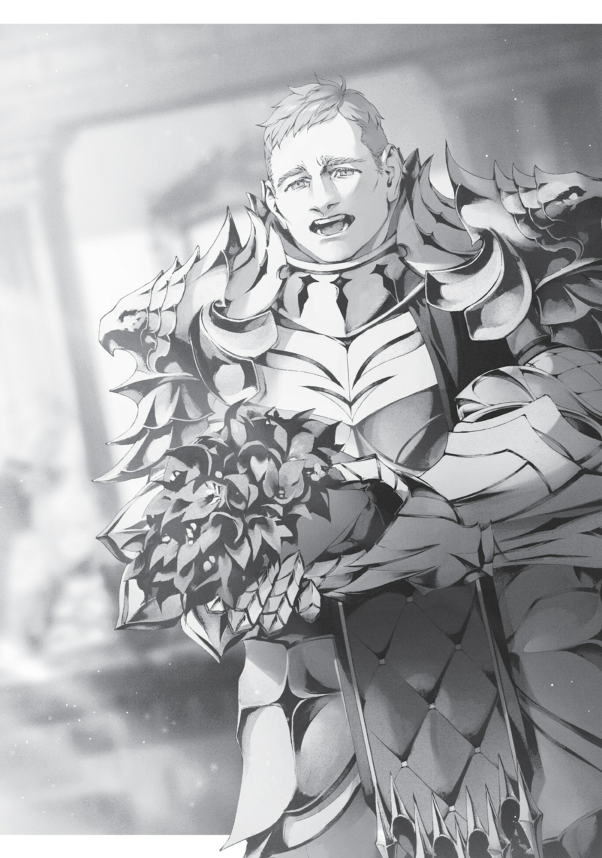

“ŞİMDİ KAÇ OLDU?”
Isolde, eğitim salonundan ayrılmış, evde oturma odasında kardeşi Tantris’in karşısında oturuyordu.
“Yirmi altı,” diye mırıldandı, gözlerini kaldırmadan. Tantris onun gözlerini yakalamaya çalıştı, ama Isolde bakışlarını kaçırıyordu.
“Küçük bir kuş, reddedenin sen olduğunu söyledi.”
“Evet.”
“Neden?”
Isolde dudaklarını sıktı. “Şey… Bilmiyorum. Hepsi iyi adamlar. İyi huylu, nazik… Ama…”
“Ama?”
“Belki de fazla iyiler. Bu da kusurlarını daha belirgin kılıyor.”
Bu adamlar Ariel aracılığıyla tanıştırılmış kraliyet üyeleriydi. Gençtiler, hoş bir görünümleri vardı ve sohbetleri oldukça güzeldi. Ama… fazla açık sözlüydüler. Belki Ariel onlara bir şey söylemişti, çünkü fetihlerinden ve arzularından bahsetmekten çekinmemişlerdi.
- Atole Orpheus Asura, yakışıklı ve nazikti, evlendikten sonra kendini tamamen Isolde’ye adayacağını söylemişti.
- Basil Venti Asura, yakışıklı ve güçlüydü, ayrıca Su Tanrısı Stili hakkında derin bir anlayışa sahipti.
- Carlos Siodos Asura, yakışıklı ve zarifti, evlendikten sonra Su Tanrısı Stili’ni maddi olarak destekleyebileceğini söylemişti.
- Daniel Lapis Asura, yakışıklı ve komikti, sohbet boyunca Isolde’yi kahkahalara boğmuştu.
- Elliot Skiron Asura, yakışıklı ve tatlıydı, Isolde’nin içgüdüsel olarak onu koruma isteği uyandırmıştı.
Ama bu adamlar her şeyi anlatmışlardı. Yatakta ve yatak dışında ona neler yapmak istediklerini, onu hangi küçük kıyafetler içinde görmek istediklerini anlatmışlardı. Isolde’nin sınırlı deneyimiyle bunlarla baş etmesi mümkün değildi. Bu adamların kafasında bir gariplik vardı; dürüst olmak gerekirse, bu durum onu rahatsız etmiş ve midelerini bulandırmıştı. Farkına varmadan, hepsiyle bağı kesmişti.
Bu deneyimler, Isolde’de erkeklere karşı bir miktar güvensizlik geliştirmişti. Tüm erkeklerin böyle olmadığını bilse de, dışarıda azımsanmayacak kadar çok sayıda böyle adam vardı. Neredeyse tamamen evlenmekten vazgeçmek üzereydi.
“Kusurlar mı? Mesela neler?”
“Sana söyleyemem. Bahsetmek bile istemediğim şeyler.”
“Ah… şey, sonuçta onlar Asura’nın kraliyet üyeleri,” dedi Tantris. Asura soyluları, sapkınlıklarıyla ünlüydü. Soyluların en üst tabakası, normal zevkleri çoktan aşmıştı.
“Bu seni zor bir duruma sokuyor. Ama hepsini reddedeceğini düşünmemiştim.”
“Hepsini değil… Yani, hâlâ birkaç aday var.”
“Öyle de olsa, pek umut verici görünmüyor, değil mi?” dedi Tantris.
Isolde, kendi kararlarını verdiği durumlarda her zaman fazlasıyla seçici davranmıştı. “Şunu istemiyorum, bunu da istemiyorum…” derken en iyi seçenekler başkaları tarafından kapılmış olurdu ve sonunda kalanlarla yetinmek zorunda kalırdı. Evlilik de bundan farklı değildi.
“Pekâlâ,” dedi Tantris sonunda. “Şöyle yapacağız.” Kız kardeşinin karakterini göz önünde bulundurarak bir karar verdi. “Bir sonraki adayla evleneceksin.”
“Ama öyle hemen…”
“Eminim o da senin standartlarına uymayacak. Ama seçici olabildiğin için kusurlarına takılıyorsun. Bir kez evlenip birlikte yaşamaya başladığınızda, bu kusurlar sana önemsiz gelmeye başlayabilir. Belki zamanla ona değer vermeyi öğrenirsin.”
Tantris, bu tür zorlama mantığı sevmiyordu. Isolde’nin diğer kişiyi derinlemesine tanımak ve seçimini ona göre yapmak için zamana ihtiyacı olduğunu düşünüyordu. Ama Ariel’in bu işi ayarlamış olması, onun bu yaklaşımın işe yarayabileceğini düşünmesine neden olmuştu. Eğer Ariel bu erkekleri tanıştırdıysa, çok da yanlış bir seçim olamazdı.
Ona fazla kredi veriyordu.
Uzun bir sessizlikten sonra Isolde kararını verdi. “Tamam.” Gerçekten de fazla seçici davranıyordu. Hayatı boyunca hep böyleydi ve muhtemelen hep böyle olacaktı. Bu özelliği Su Tanrısı Stili için uygun bir yapıya sahipti ve Su Tanrısı unvanını almak üzereydi. Ama evlilik söz konusu olduğunda, bu bir problemdi. Bu gidişle hayatının geri kalanını yalnız geçirecekti.
Su Tanrısı unvanı itibarlıydı. Onu tanıyan insanlar, ona hayranlıkla bakacak, onu övecek ve takdir edeceklerdi. Isolde de onlara karşı gülümseyip sohbet edecekti. Ama kendini iyi hissettiği bir anda, evine yalnız dönüp tek başına bir yemek yiyecek, yatmaya hazırlanacak ve yalnız uyuyacaktı.
Bu kulağa ne kadar boş geliyordu.
Su Tanrısı unvanını almak, sadece takdir görmek için yapılmazdı. Isolde’nin içinde, kılıç ustası kimliğinden ayrı bir başka Isolde vardı. O hep yalnızdı ve bu yüzden kendini boş hissediyordu. Bir koca ve çocuklar bu diğer Isolde’yi teselli eder miydi bilmiyordu, ama dünyadaki tüm övgülere sahip olsa bile, eve döndüğünde birine “Bugün kendimle gurur duyuyorum,” demek istiyordu.
Ve sonra, onunla övünmeyi bitirdiğinde, sapık kocası gelip ondan tuhaf bir şey yapmasını isteyecekti.
Ama Isolde kararını vermişti.
“Peki, bir sonraki adayla nerede ve ne zaman buluşacağım?”
“Bugün. Beni almak için bir arabayla geleceği söylendi.”
“Kraliyet ailesinden biri… seni almak için mi geliyor?”
“Evet.”
Isolde, geriye sadece üç adayın kaldığının farkında değildi. Ancak, beş talibini hiç düşünmeden reddettiğini duyan diğerleri işi ciddiye almıştı. Kimin sırayla Isolde ile görüşeceğini belirlemek için katı bir kura düzenlemişlerdi. Hepsi saldırı için hazırdı.
“Ha?” O sırada, Isolde’nin dikkatini bir şey çekti. “Eğitim salonunda bir tür kargaşa var gibi.”
Eğitim salonu, Cluel evine bitişikti. Ancak burası Su Tanrısı Stili’nin merkeziydi ve zemini buna uygun şekilde sessizdi. Genellikle bulundukları yerden bir şey duymak mümkün değildi. Ama Isolde bir Su İmparatoru idi; şiddeti hissedebiliyordu.
“Acaba çoktan gelmiş olabilir mi?”
“Henüz erken, ama zamanı karıştırmış olabilirim. Hemen gitmeliyim. Kraliyeti gücendirme riskine giremem.”
“Doğru. Acele etsen iyi olur.”
Isolde ve Tantris, kafa sallayarak hızla eğitim salonuna yöneldiler.
Salon tam bir kaos içindeydi. Eğitim kıyafetleri içindeki öğrenciler, bir adamın etrafında toplanmış, öfkeli bağırışlar ve hakaretler savuruyorlardı.
“Usta! Rakip bir okuldan bir meydan okuyucu geldi! Aniden çıkageldi ve sizi görmek istediğini söyledi!”
Isolde ve Tantris’in yüzlerindeki kan çekildi. Eğer öğrencileri bir kraliyet ailesi üyesine böyle bir muamele yapmışsa, tüm eğitim salonu yerle bir edilebilirdi. Acaba adam adını söylememiş miydi?
“Durun hemen!” diye bağırdı Isolde. Salon bir anda sessizliğe gömüldü.
“Yolu açın! O adam benim misafirim!”
“Ama… ama o—”
“Hepiniz, salonun kenarında diz çökün!” Isolde’nin emriyle, öğrenciler minik örümcekler gibi dağıldılar ve sıralar hâlinde yere oturdular. Bu, Isolde’nin büyükannesinin zamanından beri öğrencilerin eğitildiği bir disiplindi.
Ama şu anda bu önemli değildi. Şu anda özür dilemesi gerekiyordu. Öğrenciler kenara çekilince, Isolde adamı daha net görebildi.
Ha? Gözlerini kocaman bir adama dikti. Adam iki metreden uzundu, omuzları neredeyse bir metre genişliğindeydi. Bir kaya gibiydi.
Isolde o kayayı tanıyordu.
“Dohga?”
“Mm.”
Dohga, Isolde’nin seslenişiyle arkasını döndü. Gerçekten de oydu—Kraliyet Kapı Bekçisi, Asura’nın Yedi Şövalyesi’nden biri olan Dohga. Görüntüsü buraya ait değilmiş gibi duruyordu, hatta neredeyse korkudan geriye çekiliyordu. Ama Isolde’yi gördüğünde, yüzünde rahatlamış bir gülümseme belirdi.
“Az önce hayatınızı kurtardım,” dedi Isolde öğrencilerine. “Bu adam Kuzey İmparatoru Dohga. Eğer isteseydi, hepinizin işini bir…”
Bu noktada Isolde konuşmayı kesti. Çünkü Dohga’nın üzerindekilere dikkat etmişti. Üzerinde bir şövalyenin resmi tören kıyafeti vardı. Isolde, onu daha önce bu kıyafetle hiç görmemişti. Dohga genelde ya altın zırhını ya da gri zırhını giyerdi. Ariel bile bu konuda bir şey söylememişti. Kıyafet, Dohga’nın iri cüssesi üzerinde fazlasıyla dar görünüyordu ve elinde bir çiçek buketi tutuyordu. Dohga’nın devasa elinde küçük görünmesine rağmen, aslında oldukça büyük bir buketti.
“Neden buradasın? Majesteleri’ne bir şey mi oldu? Acil bir durum mu var?” diye sordu Isolde, kaşlarını çatıp.
Dohga, yavaşça ona doğru yürüdü ve elindeki buketi uzattı.
Bu olabilir mi?
Resmi tören kıyafeti ve bir çiçek buketi.
Ama hemen ardından “Bu olamaz!” diye düşündü. Yine de ilk düşüncesi ağır bastı.
“B-ben… Isolde Cluel… Seni seviyorum! Lütfen… b-benimle e-evlen!”
Dohga, Asura kraliyet ailesinin bir üyesi olabilir miydi?
Isolde’nin aklına aniden bir fikir geldi. Dohga, Ariel’in özel odalarını korumakla görevli tek erkekti. Luke özel bir durumdu, ama Sandor bile o odaların yakınında silah taşıyamazdı. Dohga, gece yarısı bile Ariel’in kapısında duruyordu. Bildiği kadarıyla, Dohga hadım değildi. Herkes onun güvenilir ve zararsız olduğunu söylüyordu, ama o hâlâ bir erkekti. Kuzey İmparatoru unvanına sahip, devasa bir adam olarak, Ariel’in odasına sızması son derece kolay olurdu.
Ariel’in neden böyle bir adamı seçtiğini Isolde hep merak etmişti. Eğer Dohga Ariel’in akrabasıysa, çocukluktan beri birbirlerini tanıyorlarsa…
Dohga’nın krallığın uzak bir köyünden geldiğini duymuştu, ama kraliyet ailesi her yerden çıkabilirdi. Tıpkı Ariel’in bir zamanlar uzak bir diyara kaçması gibi, Dohga da çocukluğunda saklanıyor olabilirdi.
“Isolde.”
Tantris’in sesi, Isolde’yi düşünceler denizinden çekip çıkardı.
Belki de az önce kötü bir durumu kıl payı atlatmıştı. Dohga, Asura Krallığı’nın karanlık bir sırrı olabilirdi. Eğer dikkatsiz davransaydı, belki kendisi bile yok edilebilirdi.
“Bir şey mi oldu?” diye sordu Tantris.
Isolde, gerçeğe odaklanmalıydı. “Hiçbir şey…” dedi, ardından tekrar Dohga’ya baktı.
Dohga az önce açıkça “Benimle evlen,” demişti. Bunu yanlış duyması mümkün değildi.
Dohga, kendine güvenle parlamıştı. Ön kapıdan kararlı bir şekilde girmiş, ona bir buket sunmuş ve evlenme teklif etmişti.
Isolde, her zaman daha romantik bir evlenme teklifi hayal etmişti. Ancak doğru açıdan bakıldığında, belki bu da romantik sayılabilirdi. Bir kalabalığın önünde bir çiçek buketiyle teklif etmek, Isolde’nin romantik teklifler listesinde vardı. Tabii bu sahnenin, bir ter kokusuyla dolu eğitim salonu yerine güzel bir çeşmenin önünde ya da şık bir partide geçmesi gerekiyordu.
Hayır, bunu kafasından atmalıydı. Ve bununla birlikte başka pek çok şeyi de.
“Tam zamanında, değil mi?” dedi Tantris temkinli bir şekilde. “O da Asura’nın görkemli Yedi Şövalyesi’nden biri. Birbirinize yakışan bir çift olursunuz.”
“Evet… Ama… Ben…” Isolde, üzerine çevrilen gözleri fark etti—öğrencilerinin gözlerini.
“Özel konuşalım. Dohga, lütfen beni takip et.”
“Mm.”
Isolde dönüp yürümeye başladı. Buketi almayınca Dohga’nın yüzü bir an için üzüldü, ama ardından hemen onu takip etti.
Ve böylece Dohga, Isolde’nin evine davet edilmiş oldu. Şimdi, oturma odasında bir kanepede oturuyor, olabildiğince küçük görünmeye çalışıyordu. Buket, dizlerinin üzerinde duruyordu. Isolde, tam karşısına oturmuş, asil bir duruş sergiliyordu. Yüzünden hiçbir şey okunmuyordu; sanki zihninde hiçbir düşünce yokmuş gibiydi. Tantris ortalarda yoktu. Onları resepsiyon odasında bırakmış, çay yapmak için gitmişti.
Isolde, Dohga’nın yüzünü inceledi. Bu dikkatli bakışlar karşısında Dohga ciddileşmeye çalıştı ama yanaklarının titremesi, ne kadar gergin olduğunu açıkça belli ediyordu.
Ancak Isolde’nin ilgisini çeken bu değildi. Onu Dohga’nın yüzü ilgilendiriyordu. Düz, samimi bir yüzdü. Ama onun tarzı değildi. Isolde, birçok şeye gözlerini kapatabilirdi ama günün sonunda, sevmediği bir şeyi sevmeye zorlanamazdı.
İçten içe, son beş teklifi yeniden değerlendirme fırsatı olmasını istiyordu. Eğer diğer özellikler az çok aynıysa, sırf yakışıklı oldukları için o beş aday daha cazipti. Ama bir sonraki kraliyet üyesi Dohga’dan bile daha az çekici olabilirdi. Üstelik bir de ağabeyiyle yaptığı anlaşma vardı. İşleri burada ve şimdi çözmeliydi.
Derin bir nefes aldı ve konuştu: “Biliyor musun, senin bir kraliyet mensubu olduğunu öğrenmek beni gerçekten şaşırttı.”
Dohga’nın ağzı bir karış açıldı. “Ben? K-kraliyetten değilim…”
Isolde tereddüt etti. “Ha? Öyleyse evlatlık mı alındın ya da buna benzer bir şey mi?” diye sordu, üstü kapalı bir şekilde ne sakladığını anlamaya çalışarak.
“Ben… küçük köyde doğdum. Donati’de. Hep kapı bekçisiydim. Babam köyün askeriydi…”
Dohga’dan aldığı şey, tamamen sıradan bir askerin nasıl yükseldiğinin hikayesiydi. Gerçi, belki de tam anlamıyla sıradan değildi. Isolde, söylediklerinden bir şeyler çıkarmaya çalışarak dinledi.
Kız kardeşi evlenince ağladığı kısma geldiğinde, Isolde o kadar içine kapılmıştı ki gözlerinde yaşların biriktiğini hissetti.
“Sonra duyuyorum ki… sen, Isolde, evleneceksin. Bundan önce… en azından hislerimi söylemek istedim.”
Isolde sessiz kaldı. Dohga’nın bu olanlarla bir bağlantısı yoktu. Ariel’in tanıştırmak istediği kraliyet üyelerinden biri değildi. Bu durumda, Isolde kararını verdi: Onu reddedecekti. Üzücüydü, ama Ariel’e saygısızlık edemezdi.
Hm? Neden ‘üzücü’ diye düşündüm?
Cevabı belliydi. Dohga dürüst, çalışkan ve sadıktı. Söylediklerinden anlaşıldığı kadarıyla korkunç yatak odası tercihleri yoktu. Kuzey İmparatoru unvanını alacak kadar yetenekliydi ve Asura’nın Yedi Şövalyesi’nden biriydi. İstikrarlı bir geliri vardı. İçki içmeyi seviyordu ama şiddet eğilimli bir sarhoş değildi ve abartılı bir lüks düşkünlüğü yoktu. Tek sorunu yüzüydü, o da çok kötü değildi—sadece Isolde’nin tam tarzı değildi.
“Ş-şey…!” Isolde’nin kaşlarını çatmasına karşılık, Dohga büyük bir irade çabasıyla konuştu: “İlk… seni gördüğümden beri, düşünüyorum ki… Isolde, bu çiçekler kadar… güzel. Hep… seni sevdim!” Ardından buketi bir kez daha ona uzattı.
“Gerçekten mi? İlk gördüğün andan beri mi?” Isolde’nin görüş alanı tamamen çiçeklerle doldu. Çiçekler koyu mavi renkteydi. İsimlerini bilmiyordu ama güzeldiler. Kalbinde küçük bir kıvılcım yandı.
“Mm.”
Eğer doğru hatırlıyorsa, Isolde’nin Dohga ile ilk karşılaşması bir dövüş olmuştu. Ariel’in güvenliğiyle ilgili bir mesele yüzünden kapışmışlardı. Bunca zaman Dohga böyle mi hissetmişti? Geriye dönüp düşündüğünde, Dohga’nın kendisine karşı biraz yumuşak davrandığını fark etti. Dohga, her zaman ona güvenmişti. Isolde, Ariel’in odalarına girdiğinde silahına el koymamıştı. İkisinin de Asura’nın Yedi Şövalyesi olması bunun bir parçasıydı, ama belki de mesele sadece bu değildi.
Aklı bu düşüncelerle meşgulken, Dohga ona içten bir ifadeyle bakıyordu—yüzü artık %20 daha çekici görünüyordu. O kadar da kötü değildi. Doğru açıdan bakıldığında oldukça etkileyici bile olabilirdi. Üstelik genelde bir miğfer taktığı için yüzü çoğu zaman görünmüyordu bile.
“Dur, dur…!” Isolde başını salladı. “Gerçekten üzgünüm, ama Kraliçe Ariel’in tanıştırdığı bir kraliyet ailesi üyesiyle evleneceğim.”
Eğer şimdi Dohga ile bir ilişkiye girerse, bu Ariel’e utanç getirebilirdi. Isolde bir şövalyeydi. Mutlak bağlılık yemini etmemişti, ama bağlılık yemini etmişti. Kendi istekleri için bağlılık yemini ettiği kişiyi utandıracak bir şey yapamazdı.
“Sen de Kraliçe Majesteleri’nin şövalyelerinden birisin,” diye devam etti. “Onun isteklerine karşı gelemezsin, değil mi?”
Dohga biraz üzgün görünüyordu ama yine de “Mm,” dedi. Dohga da bir şövalyeydi. Aynı zamanda, Ariel’in kapı bekçisi olacak kadar onun güvenini kazanmış, çalışkan biriydi. Ariel’e ihanet etmezdi.
“Şimdi evine dönebilirsin,” dedi Isolde.
“Mm.”
Isolde, Dohga’nın en azından biraz itiraz edeceğini düşünmüştü. Ama Dohga hemen ayağa kalktı, ardından Isolde’ye sırtını dönüp uzaklaştı. Bu kadar basit. Hatta, ruh hali iyiymiş gibi görünüyordu. Sanki reddedileceğini en başından biliyormuş ve sadece duygularını dile getirmiş olmaktan memnunmuş gibi bir hali vardı. Isolde bu durum karşısında biraz hayal kırıklığına uğradı.
Bir iç çekti ve masaya baktı. Orada bir mavi çiçek yaprağı duruyordu. Buket gitmişti. Dohga muhtemelen buketi yanında götürmüştü.
“Keşke en azından çiçekleri alsaydım…” diye mırıldandı, yaprağı eline alırken.
O gün Isolde, kraliyetten gelen bir sonraki talibini de reddetti.
***
Isolde, ertesi gün eğitim alanında talim yaptırırken, bir yandan da önceki günü düşünüyordu.
Dünkü kraliyet talibi Fraser Caecius Asura idi. Diğerleri gibi onun da sapkınlıkları korkunçtu, ama kötü bir insan değildi. Ancak Dohga ile kıyaslandığında, Fraser ona daha samimiyetsiz gelmişti. Yine de, onu tamamen reddetmek yerine kararını erteleyebilseydi, onu gücendirmekten kaçınabilirdi.
Her halükarda, geriye sadece iki talip kalmıştı. Sadece iki. İkisini de dikkatlice değerlendirmeli ve birini seçmeliydi, diye düşündü. Tam o sırada bir haberci yanına geldi.
“Bayan Isolde! Majesteleri acilen sizinle konuşmak istiyor!”
Bunu duyunca Isolde, Ariel’in peş peşe talipleri reddetmesi konusunda onu azarlayacağını düşündü. Hakkı neyse çekecekti. Ariel’e bir özür borçluydu.
“Pekâlâ,” dedi ve eğitim alanını terk etti. Çıkıştaki şövalyelere ayrılmış odaya girdi ve üzerindeki tozu silkelerken, “Su ile yıkanmam gerekirdi ama acil olduğu için bunu atlayabilirim,” diye düşündü. Hızlı adımlarla kraliyet odalarına doğru yola koyuldu.
“Hm?” Sarayın en iç kısımlarına yaklaştıkça bir şeylerin yolunda gitmediğini hissediyordu. Normalde burası sessiz olurdu, etrafta asker ya da şövalye bulunmazdı; sadece boş koridorlar uzayıp giderdi. Ama şimdi heyecanla hareket eden askerler görüyordu. Bir şey mi oldu acaba? diye merak etti. Ama kraliçenin çağrısı öncelikliydi. Onlara bir şey sormadan yoluna devam etti ve kraliyet odalarına doğru hızlandı.
Isolde’nin kaşları çatıldı. Kapıda olması gereken biri yoktu—kaya gibi iri bir adam ve altın zırhı içinde Asura’nın en güçlü kapı bekçisi olan Dohga. Ariel odalarındayken Dohga, bu sarayı terk etmezdi. Ama şimdi ortalıkta yoktu.
Onun yokluğunu telafi etmek istercesine, saraydaki şövalyeler kraliyet odalarının etrafında sıralanmışlardı. Hepsi silahlıydı. Tam bir kargaşa! Bu şövalyelerin her biri tecrübeli askerlerdi. Normalde, buraya yaklaşmasına bile izin verilmeyen düşük ve orta rütbeli soylu kökenli şövalyeler bile buradaydı. Bu, Sylvester’ın liderliğini gösteriyordu. Sylvester, aldığı kararların sonuçlarını pek düşünmezdi.
“Lord Ifrit!” dedi Isolde, tanıdık bir figürü fark ederek. Sarayın muhafız komutanı ve Kraliyet Kalesi unvanını taşıyan Sylvester Ifrit idi bu.
“Bayan Isolde, hızlı geldiniz.”
“Burada neler oluyor?” diye sordu Isolde. Sylvester, nereden başlayacağını düşünüyormuş gibi yüzünü buruşturdu.
Birkaç saniye geçti, ardından omuz silkip, “Majesteleri seninle konuşmak istiyor,” dedi.
Git içeri sor demekten farksız bir cevaptı bu. Buradan bir açıklama alamayacağını anlayan Isolde, kapıyı tıklattı.
“Isolde Cluel, Majesteleri’ni görmeye geldi!”
“Lütfen, içeri gelin.” Ariel’in sesi her zamanki gibiydi. Ortalıktaki kargaşanın aksine, sesi tamamen sakindi.
“Afedersiniz,” dedi Isolde, kapıyı açıp içeri girerken.
İçeri girdiğinde tuhaf bir manzarayla karşılaştı. Ariel, masasında oturuyordu. Yanında kollarını çaprazlamış, yorgun bir ifadeyle Luke vardı. Onların yanında ise Ariel’in silahları çekilmiş korumaları duruyordu. Hepsi savaşa hazır görünüyordu. Ve bir de Dohga…
Dohga, genelde görev yerinden ayrılmazdı, ama işte oradaydı. Altın miğferini bir kolunun altında tutuyordu ve diğer elinde biraz solgun görünen bir çiçek buketi vardı.
“Hoş geldin, Isolde. Oldukça çabuk geldin,” dedi Ariel.
“Merasim alanındaydım… Majesteleri, bu olanlar ne anlama geliyor?”
“Dohga, şövalyelikten istifa etmeyi düşündüğünü söylüyor,” dedi Ariel gayet sakin bir şekilde.
“Ne?!” Isolde hızla Dohga’ya baktı. Yüzündeki ifade ciddiydi. Bu bir şaka değildi.
“O… Yani… Neden böyle bir şey yapıyormuş?”
“Lütfen Dohga’ya sorun,” dedi Ariel ve ekledi: “Dohga, lütfen sebeplerini tekrar et.”
Dohga’nın bakışları Ariel’e döndü ve ardından başını salladı.
“Isolde…dedi ki… Kraliçe Ariel’in şövalyesi…onunla evlenemez.”
Ne?!
Dohga’nın bu kısa açıklamasıyla, Isolde neden çağrıldığını anlamıştı.
“Hayır! Sadece, ‘Sen de onun isteklerine karşı gelemezsin, değil mi?’ dedim. Çünkü majestelerine utanç getirmek istemedim!”
“Isolde, sakin ol ve onun konuşmasını bitirmesine izin ver,” dedi Ariel yumuşak bir sesle.
Isolde sustu, ama içindeki karmaşa durulmamıştı. Konuşma yanlış bir yere giderse, bu durum sanki Isolde’nin Dohga’yı Ariel’e ihanet etmeye teşvik ettiği şeklinde algılanabilirdi. Hatta dışarıdaki kargaşaya bakılırsa, herkesin zaten bu şekilde düşündüğü belliydi.
“Dohga.”
Ariel’in seslenmesiyle Dohga, kelimeleri yavaşça seçerek konuşmaya başladı:
“Ben…çok düşündüm. Babama…kardeşimi koruyacağıma söz verdim. Leydi Ariel dedi ki…krallığı korumak, kardeşimi korumak demek. Leydi Ariel kraliçe, o yüzden onu korumak krallığı korumak demek. Ama kız kardeşim diyor ki…beni yeterince korudun. Artık bir sorunu yok. O yüzden…şimdi sevdiğim kişiyi koruyorum. Leydi Ariel’i seviyorum. Bu krallığı seviyorum. Ama Isolde’ye olan sevgim…daha özel. Bu yüzden istifa ediyorum… Leydi Ariel’in şövalyesi olarak. Sonra…Isolde’yi koruyacağım.”
Miğferini masaya bıraktı, gümbürtüyle yere indi. Ardından dönüp buketi Isolde’ye doğru uzattı.
Isolde, önünde duran mavi çiçeklere baktı. Yaprakları biraz solmuştu. Bu, dünkü buketti.
“Dohga’nın söylemek istedikleri bunlar… Ama sen ne diyorsun, Isolde?” dedi Ariel.
“Ha?”
Isolde, bu ani aşk ilanı karşısında şaşkınlıkla gözlerini kırptı.
“Hangi şartları belirlemiş olursan ol, görünen o ki, Dohga Asura’nın Yedi Şövalyesi ünvanını bir kenara bırakıp seni seçiyor. Tüm kadınların hayalini kurduğu o an, hm? Peki, ne diyorsun?”
Ariel, onu ihaneti kışkırtmakla suçlamayacaktı. Dahası, Isolde’den Dohga’ya cevap vermesini istiyordu.
“A-ama Majesteleri’nin tanıştırdığı tüm o erkekler…”
“Ah, onlar mı? Boş ver onları,” dedi Ariel hafifçe.
Isolde’nin göğsünde hissettiği baskı, Biheiril Krallığı’nda Dövüş Tanrısı ile karşılaştığı andaki korkusundan bile daha güçlüydü.
Dizlerinin titremesine engel olamıyor, neredeyse yere yığılacağını hissediyordu.

“B-ben…”
Birden, ilk Su Tanrısı’nın efsanesini ve her şeyini bir kenara bırakarak onunla evlenmeyi seçen prensesi hatırladı.
Dohga’nın dün ona anlattıklarına bakılırsa, Dohga neredeyse hiçbir şeye sahip olmayan bir adamdı. Elinde olanlar: devasa cüssesi, gücü, birkaç akrabası ve Asura’nın Yedi Şövalyesi’ndeki göreviydi. Hepsi bu kadardı.
Ve o, Isolde’yi seçmişti.
Ailesini ve görevini bırakmak pahasına bile. Sadece bir gün geçmişti. Çok düşündüğünü söylemişti ama aldığı karar neredeyse anında verilmiş gibiydi. Dohga, Isolde’nin her şeyden daha değerli olduğunu söylemişti. O, Ariel’in gönderdiği diğer soylular ya da kraliyet talipleri gibi değildi. Hiçbiri, sahip oldukları en büyük şeyleri bir kenara bırakacak kadar Isolde’yi göze almazdı. Tıpkı, ilk Su Tanrısı’yla evlenen prenses gibi.
Belki de dünyada Isolde’yi bu kadar sevecek tek kişi Dohga’ydı.
Daha ne isteyebilirdi ki? Görünüş kimin umurundaydı?
Farkında bile olmadan, Isolde buketi—o devasa mavi çiçek demetini—almıştı. Çiçekler tam olgunluklarını geçmişti, ama yine de güzellerdi. Dohga, çiçekler solsa bile onları sever ve saklardı. Sonuçta, gençlik ve güzellik sonsuza dek sürmezdi.
“Eğer beni kabul edersen, seninim,” dedi Isolde.
“Mm!”
Dohga’nın yüzünde parlayan bir gülümseme belirdi. Çevrelerinden gelen alkış sesleri havayı doldurdu.
***
Kraliyet odasındaki evlenme teklifinin hikâyesi, kısa sürede herkesin diline düştü. Bu hikâye, en alt rütbelerdeki askerlere kadar yayıldı. Dohga’nın eski dostları mutluluktan gözyaşı dökerken, Isolde’nin hayranları yastıklarına kapanıp ağladılar. Dohga, Asura’nın Yedi Şövalyesi’nden istifa ederek Isolde’nin kocası oldu. Artık “Yedi Şövalye’den Dohga” değil, “Ev Erkeği Dohga” olarak anılacaktı… ya da en azından plan buydu.
“Şövalyelikten istifa etmeyi düşündüğünü söylüyorsun. Isolde de bu krallığın bir şövalyesi. Çok güçlü, evet, ama eğer ben ölürsem ve krallık istikrarsızlaşırsa, o da öldürülebilir. Elbette onu koruyacaksın, ama yine de… Tabii ki ben ölmediğim sürece bu olmayacak. Peki ya sen ne diyorsun, Dohga? Isolde’yi korurken, beni de korumaya devam edebilir misin?”
Ariel’in bal gibi tatlı sözlerine kapılan Dohga, şövalyeliğe devam etti. Ariel tam bir stratejistti; Kuzey İmparatoru Dohga’yı ellerinden kaçırmaya niyeti yoktu. Sarayda yarattığı olay yüzünden Dohga’yı azarladı ve ceza olarak ona bazı görevler verdi. Ancak bu işler zorlayıcı olmaktan uzaktı.
Böylece, hem Isolde hem de Dohga, kendi köklerini salmaya başladı. Asura’nın Yedi Şövalyesi, aralarındaki bağları daha da güçlendirdi, bu da Ariel için büyük bir başarıydı. Ariel, Dohga yüzünden yarı yolda bıraktığı kraliyet taliplerine borçlanmıştı, ama bu önemli değildi.
Ancak evlilikleri nedeniyle, Dohga’nın kraliyet odalarını koruma süresi büyük ölçüde azaldı. Her gece tam zamanında evine dönüyordu ve Isolde bir yere gidecekse, ona mutlaka eşlik ediyordu. Bunun bir sonucu olarak, Isolde neredeyse Ariel’in kişisel koruması gibi bir role kaydırıldı.
Isolde, biraz garip bir şekilde de olsa, Dohga ile evlenmeyi kabul etmişti. Ancak, evlenmeden önce bir flört dönemi şartı koydu, bu yüzden düğünleri ancak bir yıl sonra gerçekleşti. Bu gecikme nedeniyle, evlendikten sonra bile sadece Dohga’nın tek taraflı sevgisiyle evlendiği ve Isolde’nin ona pek ilgi göstermediği yönünde söylentiler yayıldı. Saraydaki tutumu, Dohga’ya karşı her zamanki kadar mesafeli ve soğuk olduğu için bu dedikodular güçte kazandı.
Ancak bu söylentiler, bir gün Isolde’nin askerlerin önünde kazara Dohga’ya “hayatım” diye hitap etmesiyle ve ardından kıpkırmızı olup kendini düzeltmeye çalışmasıyla çabucak söndü. İnsanlar, yalnız kaldıklarında Isolde’nin Dohga’ya daha sıcak davrandığını tahmin etmeye başladılar.
Ve işte böyle, Dohga ve Isolde karı koca oldular.